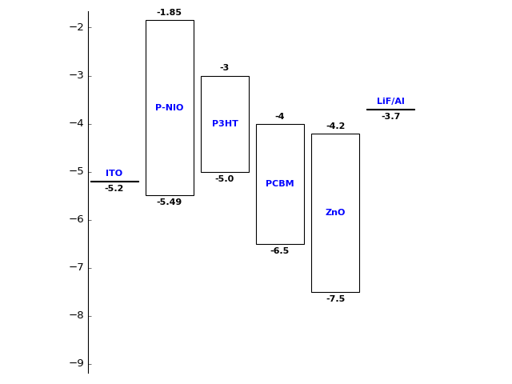

Creating Energy Band Diagrams for Solar cells and LED
Posted on Mon 11 September 2017 in Misc
Energy band diagrams are used to visulize the electron and hole transport in Solar cells and LED research. I want to quickly draw them and came up with a python module.
Here's an example on how to use this code.
from Band_diagram import metal, semiconductor, plot
# Define the metals and semiconductors. Here wf is the work function of metals,
# cb is conduction band minimum and vb is valance band maximum wrt to vacuum level
ITO = metal(wf = -5.2, name= 'ITO')
p_nio = semiconductor(cb = -1.85, vb = -5.49, name = 'P-NIO')
p3HT = semiconductor(cb = -3, vb = -5.0, name = 'P3HT')
PCBM = semiconductor(cb = -4, vb = -6.5, name = 'PCBM')
ZnO = semiconductor(cb = -4.2, vb = -7.5, name = 'ZnO')
LiF_Al = metal(wf=-3.7, name = 'LiF/Al')
## Create the stack
stack = [ITO,p_nio,p3HT,PCBM,ZnO,LiF_Al]
## plot the stack and save it
plot(stack, filepath = 'Images/Stack1.png')
will result in the following plot

You can download it at my github repository.